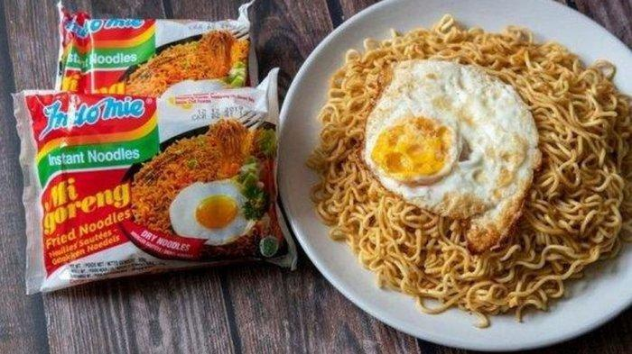

Indomie Goreng

Deskripsi
Indomie goreng ada resepnya? Saya juga baru tahu.
Tingkat kesulitan: Mudah
Preparasi: 10 menit
Waktu memasak: 10 menit
Waktu membersihkan: 10 menit
Bahan-bahan (2 Porsi)
- 2 bungkus indomie
- 1 butir telur (opsional/telur mata sapi)
- 3 cabai merah
- 5g bawang merah goreng
- 5g siung bawang putih
- 5g bawang merah (irisan)
- 5g cabe rawit merah
- 25g tomat
- 25g mentimun
- Saus kedelai manis
- 10g saus sambal
Langkah-langkah
- Panaskan air hingga mendidih, lalu tambahkan mie hingga 3/4 tingkat ‘al dente’, setelah itu angkat dan keringkan.
- Siapkan wajan anti lengket, tambahkan sedikit minyak goreng, tumis bawang merah, cabai merah, bawang putih, dan tumis sampai matang.
- Masukan mie yang sudah kering, kecap manis, saus cabai, bumbu bubuk dan aduk sampai rata.
- Tambahkan bawang goreng, aduk kembali sampai rata dan matang.
- Siap disajikan dengan telur dan salad mentimun.
Sumber: Asian Food Network